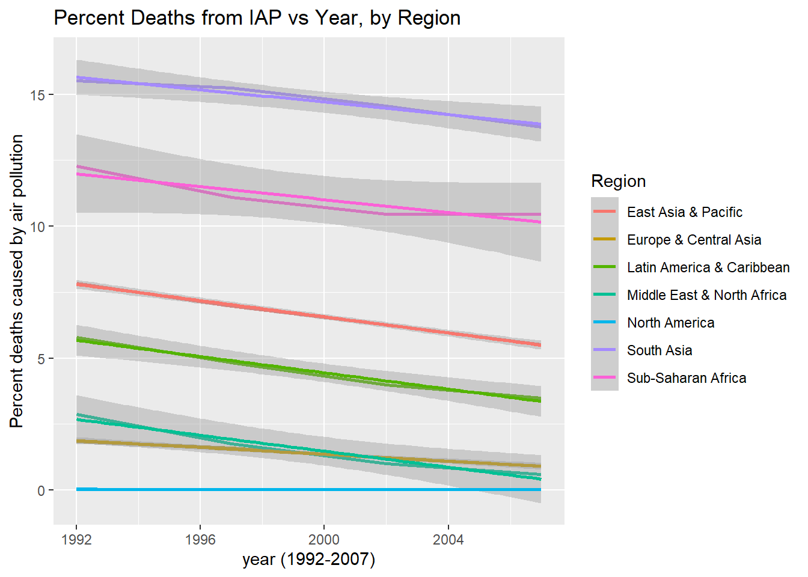
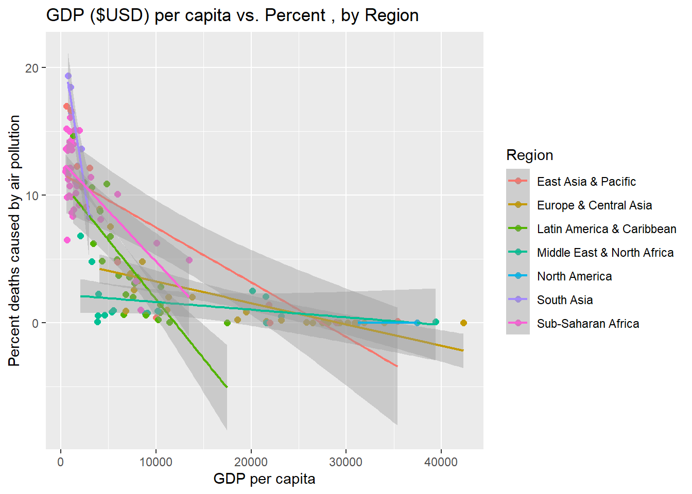

Premature deaths related to indoor air pollution data for many countries across the globe have been collected over three decades, which have been compiled in this data set as percentages of the population for a given year. Using the information, this analysis will attempt to infer two important characteristics that may offer insight into the cause of inadequate/unsafe indoor conditions; impact of GDP on the percent deaths is the first layer, and impact of average climates in the regions with similar GDP is the second. Firstly, exploratory analysis done to generate these hypotheses found that time will be a significant factor to consider, throughout this analysis.
Introduction
Since the earliest days of thinking about the dangers associated with pollution in the air, much of the conversation has been focused on the risks associated with our infrastructure –vehicles, energy, and manufacturing at the forefront. More recently, it has become apparent that we are also in need of considering the risks associated with out indoor air pollutants, which is now understood to be a source of premature deaths worthy of concern. Access to clean energy for households is one of the major challenges facing developing countries around the globe, with an estimated 3 billion impacted by the effects of indoor pollution and 4.3 of them suffering premature deaths in 2012 alone (Air quality and health, 2014) . The World Health Organization estimates that “Almost half of all deaths due to lower respiratory infection among children under 5 years of age are caused by inhaling particulate matter (soot) from household air pollution.” and also estimates that as much as 90% of the premature deaths related to indoor, or household air pollution are found in middle- or low- income countries (Air quality and health, 2014), a fact that may suggest several disparities such as access to healthcare, clean energy, and regulatory protections for what can be installed in residential homes.
Indoor air pollutants can become well over 100x more concentrated in large, poorly ventilated indoor spaces both public and private. Moreover it has been documented that people living in developed regions spend 80-90% of our lives indoors which suggests significant prolonged exposure, even in high-income countries (González-Martín et al., 2021). While “indoor pollutants” represents a wide range of potential pollutants, some like those generated from combustion of bio fuels have particularly dangerous health implications when burned indoors.
WHO considered Sub-Saharan Africa to be the most significantly impacted by the combined affects of rapid population growth with relatively poor economies, and even worse access to clean energy technologies (Air quality and health, 2014).
Some reports suggest as much as three billion individuals are impacted by toxic indoor air pollutants every day, with as many as 4 million deaths yearly being attributed to IAP exposure (Gordon et al., 2014)
Defining Indoor Air Pollutants
Volatile Organic Compounds: emitted from everyday household items such as aerosol cleaners, plastic products, furniture, paints, candles/scented items, adhesives, and many other products. VOCs are the least understood of the indoor air pollutants, and many have still yet to be identified, let alone medically understood.
The five most common VOCs include benzene, formaldehyde, methylene chloride, tetrachloroethylene, toluene, xylene, and 1,3-butadiene
Particulate matter: Dust, smoke, dirt, and other small particles created from many sources and suspended in moving air. Some of the most significant indoor air pollutants are produced by combustion from cooking, heating, or smoking. PM ranges from a mild irritant to a major cause of death depending on the concentration and extent of exposure.
Particulate matter represents the largest cause of premature deaths related to indoor air pollutants; Research has suggested that air pollution is responsible for 1 in 10 deaths globally (González-Martín et al., 2021).
Burning bio fuels like wood or crops produce significantly more hazardous particulate matter then fuels like ethanol or bio diesel. Wood contains heavy metals like arsenic, cadmium, and lead that can accumulate in soils and then get taken into the air, producing dust and ash from incomplete combustion. These sources of fuel are most common in developing countries, and regions with limited access to cleaner fuels.
Nitrogen Oxides: Also an aspect of biofuel combustion, NOx compounds are known to have significant adverse health affects affecting the respiratory and cardiovascular system, which has been linked to asthma, bronchitis, eye/skin/throat irritation, headaches & nausea as well as a weakened immune system
Carbon monoxide/dioxide: Both carbon monoxide and dioxide are hazardous in large concentrations and are produced by the combustion of all fuels, including gas. Carbon monoxide can be hazardous, with hundreds of deaths still caused in the US by accidental CO poisoning.
Radon: Second leading cause of lung cancer globally, radon is naturally released by soil, rocks, and water, which can release slowly and build up inside poorly ventilated homes.
Attaching package: 'janitor'
The following objects are masked from 'package:stats':
chisq.test, fisher.test
library(magrittr)
Attaching package: 'magrittr'
The following object is masked from 'package:purrr':
set_names
The following object is masked from 'package:tidyr':
extract
Rows: 8010 Columns: 4
── Column specification ────────────────────────────────────────────────────────
Delimiter: ","
chr (2): Entity, Code
dbl (2): Year, Deaths - Cause: All causes - Risk: Household air pollution fr...
ℹ Use `spec()` to retrieve the full column specification for this data.
ℹ Specify the column types or set `show_col_types = FALSE` to quiet this message.
Table A: Describing the Variables
# Create a data split containing 15% of the total dataset for exploratory analysis iap_splits <-initial_split(indoor_pollution, prop =0.15,pool =1)# Extract the training & Testing split from the data split and rename it as exploratory_dataexploratory_data <-training(iap_splits) ##Rename training splittest_data <-testing(iap_splits) ##Rename testing split# Select the first six rows of the exploratory_data datasethead(exploratory_data) %>%# Rename a column and format the table using kable() and kable_styling()rename(percent_deaths_by_household_pollution = deaths_cause_all_causes_risk_household_air_pollution_from_solid_fuels_sex_both_age_age_standardized_percent) %>%#shorten the long name kable(digits =c(1,0,0,2)) %>%##apply significant figure contstraints to the outputkable_styling(bootstrap_options =c("hover", "striped"))
entity
code
year
percent_deaths_by_household_pollution
Western sub-Saharan Africa
NA
1994
12.26
South Sudan
SSD
2003
11.57
Uzbekistan
UZB
2010
3.13
Bosnia and Herzegovina
BIH
2008
4.54
Grenada
GRD
1993
4.10
Europe
NA
2005
0.57
Observation:
This data set contains variables gathered across multiple years, listing the percent of deaths caused by indoor air pollutants created from indoor combustion. Given the amount of data present in this data set, several potential hypotheses could likely be considered.
The data, listed by country and region, are mixed in the data set and will likely require some cleaning to separate. categorical data and contains variables that were collected over many years.
Depending on the scope of research, it may be more useful to focus on the data set containing regional data rather than country-specific to highlight what role climate plays in the effect of indoor air pollution.
In temperate climates, it is more likely to use bio fuels for heating as well as cooking. Alongside the availability of insulation material for homes that reduced the ability for indoor and outdoor atmosphere gas exchange, this may be an essential factor that could be compared with this data.
Using the temporal variable that is available in this data, some inferences may be developed to correlate the rate at which different regions are improving compared to each other.
Grouping the data by region and providing some additional data about the average temperature would be interesting to see if, when accounting for all variables, the difference in climate has a significant impact on regional premature deaths from indoor air pollution.
Considering the data by country could provide some valuable insight into the impact of politics and economic factors on indoor pollution. It is likely that GDP is a major factor that would sum the impact of a country improving its access to clean energy technology, preventative regulations, and healthcare. Adding in additional data about country-specific metrics will be extremely valuable for this analysis.
Table B: Grouped Countries by Region
exploratory_data %>%# Adding a new column to the datasetmutate(region =countrycode(entity, origin ="country.name", destination ="region")) %>%# Filtering out "entities" in the dataset that are not countriesfilter(region!=0) %>%## continent or region can be used# Grouping the dataset by region and entity, and summarizing the datagroup_by(region, entity) %>%summarise() %>%# Grouping the summarized data by region and reading out the new columngroup_by(region) %>%summarise("Unique Countries"=paste(unique(entity), collapse =", "))
Warning: There was 1 warning in `mutate()`.
ℹ In argument: `region = countrycode(entity, origin = "country.name",
destination = "region")`.
Caused by warning in `countrycode_convert()`:
! Some values were not matched unambiguously: Africa, African Region, African Union, America, Andean Latin America, Asia, Australasia, Caribbean, Central Asia, Central Europe, Central Europe, Eastern Europe, and Central Asia, Central Latin America, Central sub-Saharan Africa, Commonwealth, Commonwealth High Income, Commonwealth Low Income, Commonwealth Middle Income, East Asia, East Asia & Pacific - World Bank region, Eastern Europe, Eastern Mediterranean Region, Eastern sub-Saharan Africa, England, Europe, Europe & Central Asia - World Bank region, European Region, European Union, G20, High-income, High-income Asia Pacific, High-income North America, High-middle SDI, High SDI, Latin America & Caribbean - World Bank region, Low-middle SDI, Low SDI, Micronesia (country), Middle East & North Africa, Middle SDI, Nordic Region, North Africa and Middle East, North America, Northern Ireland, Oceania, OECD Countries, Region of the Americas, Scotland, South-East Asia Region, South Asia - World Bank region, Southeast Asia, Southeast Asia, East Asia, and Oceania, Southern Latin America, Southern sub-Saharan Africa, Sub-Saharan Africa - World Bank region, Timor, Tropical Latin America, Wales, Western Europe, Western Pacific Region, Western sub-Saharan Africa, World, World Bank High Income, World Bank Low Income, World Bank Lower Middle Income, World Bank Upper Middle Income
`summarise()` has grouped output by 'region'. You can override using the
`.groups` argument.
# A tibble: 7 × 2
region `Unique Countries`
<chr> <chr>
1 East Asia & Pacific American Samoa, Australia, Brunei, Cambodia, China…
2 Europe & Central Asia Albania, Andorra, Armenia, Austria, Azerbaijan, Be…
3 Latin America & Caribbean Antigua and Barbuda, Argentina, Bahamas, Barbados,…
4 Middle East & North Africa Algeria, Bahrain, Djibouti, Egypt, Iran, Iraq, Isr…
5 North America Bermuda, Canada, United States
6 South Asia Afghanistan, Bangladesh, Bhutan, India, Maldives, …
7 Sub-Saharan Africa Angola, Benin, Botswana, Burkina Faso, Burundi, Ca…
## could not figure out how to make this show the entire list of countries, even in the notebook output.
/liGraph A: Distribution of Observations by Year
exploratory_data %>%ggplot()+geom_bar(aes(year),color="blue")+labs(title="Distribution of observations by Year",y ="# Observations")
Observations
This data shows the distribution of variables across several years.
This spread suggests there is a lot of value in interpreting this data by year. This could provide several different benefits for interpreting the data assuming that year is a valuable predictor for the change in premature deaths by country or region. comparing the rate of change between regions could be an interesting visualization to see where progress is being made, and if there were any major periods of regression.
It seems that the quantity of variables spread across this time span eliminates any hypothesis that would not involve a temporal comparison. If focusing on a single-year comparison becomes functional to the goals of this analysis, it may be valuable to pick a year with the most variables since they are not all the same.
Table C: Single Variable Regression Analysis – Indoor Air Pollution and Year
Warning: There was 1 warning in `mutate()`.
ℹ In argument: `Regions = countrycode(entity, origin = "country.name",
destination = "region")`.
Caused by warning in `countrycode_convert()`:
! Some values were not matched unambiguously: Africa, African Region, African Union, America, Andean Latin America, Asia, Australasia, Caribbean, Central Asia, Central Europe, Central Europe, Eastern Europe, and Central Asia, Central Latin America, Central sub-Saharan Africa, Commonwealth, Commonwealth High Income, Commonwealth Low Income, Commonwealth Middle Income, East Asia, East Asia & Pacific - World Bank region, Eastern Europe, Eastern Mediterranean Region, Eastern sub-Saharan Africa, England, Europe, Europe & Central Asia - World Bank region, European Region, European Union, G20, High-income, High-income Asia Pacific, High-income North America, High-middle SDI, High SDI, Latin America & Caribbean - World Bank region, Low-middle SDI, Low SDI, Micronesia (country), Middle East & North Africa, Middle SDI, Nordic Region, North Africa and Middle East, North America, Northern Ireland, Oceania, OECD Countries, Region of the Americas, Scotland, South-East Asia Region, South Asia - World Bank region, Southeast Asia, Southeast Asia, East Asia, and Oceania, Southern Latin America, Southern sub-Saharan Africa, Sub-Saharan Africa - World Bank region, Timor, Tropical Latin America, Wales, Western Europe, Western Pacific Region, Western sub-Saharan Africa, World, World Bank High Income, World Bank Low Income, World Bank Lower Middle Income, World Bank Upper Middle Income
model_region_temp <-linear_reg() %>%set_engine("lm") #construct model instancemodel_region_reg<-recipe(percent_deaths_by_IAP~year,data = model_data)#generate a recipe -- what variables do we have in y = mx+bmodel_region<-workflow() %>%add_model(model_region_temp) %>%add_recipe(model_region_reg) #combine the model and recipe to generate a regression analysismodel_region_fit <- model_region %>%fit(model_data) model_region_fit %>%glance() %>%kable(digits=c(4,4,2,4,0,0,2,2,2,2,0,0)) %>%kable_styling(bootstrap_options =c("hover", "striped"))
r.squared
adj.r.squared
sigma
statistic
p.value
df
logLik
AIC
BIC
deviance
df.residual
nobs
0.0511
0.05
5.71
48.5474
0
1
-2856.31
5718.62
5733.04
29384.5
902
904
# looking to build a regression analysis to determine if a correltion can be seen in the data. prediction is decreasing n over time grouped by region
Observations
This regression analysis provides some useful information that will be valuable to repeat with the entire data set.
r-squared value: Describes how well the variables fit the dependent variable (model) and describe the data. The higher the R^2 value, the more significant the relationship between the model and the predictor. the r-squared value suggests that between some percent of the deaths caused by IAP in this data set is explained by the year variable. This will be important to rerun for the full data set.
P-value: this is the statistical variable generated to describe if the prediction that year has a statistically significant impact on the % deaths per year. The small p-value suggests year will show a correlation to a decrease in n in a larger population, even if the overall impact is relatively small.
Table D: Percent Premature Deaths caused by Air pollution – Global averages Summary
exploratory_data %>%mutate(country_region =countrycode(entity, origin ="country.name", destination ="region")) %>%filter(country_region!=0) %>%rename("percent_iap"= deaths_cause_all_causes_risk_household_air_pollution_from_solid_fuels_sex_both_age_age_standardized_percent) %>%group_by(country_region) %>%summarize("Lowest percentage of deaths"=min(percent_iap),"Highest percentage of deaths"=max(percent_iap),"Average percentage of deaths"=mean(percent_iap),"Standard Deviation"=sd(percent_iap),'Number of Variables Measured'=length(unique(entity))) %>%kable(digits =c(1,3,1,2,1)) %>%kable_styling(bootstrap_options =c("hover", "striped"))
Warning: There was 1 warning in `mutate()`.
ℹ In argument: `country_region = countrycode(entity, origin = "country.name",
destination = "region")`.
Caused by warning in `countrycode_convert()`:
! Some values were not matched unambiguously: Africa, African Region, African Union, America, Andean Latin America, Asia, Australasia, Caribbean, Central Asia, Central Europe, Central Europe, Eastern Europe, and Central Asia, Central Latin America, Central sub-Saharan Africa, Commonwealth, Commonwealth High Income, Commonwealth Low Income, Commonwealth Middle Income, East Asia, East Asia & Pacific - World Bank region, Eastern Europe, Eastern Mediterranean Region, Eastern sub-Saharan Africa, England, Europe, Europe & Central Asia - World Bank region, European Region, European Union, G20, High-income, High-income Asia Pacific, High-income North America, High-middle SDI, High SDI, Latin America & Caribbean - World Bank region, Low-middle SDI, Low SDI, Micronesia (country), Middle East & North Africa, Middle SDI, Nordic Region, North Africa and Middle East, North America, Northern Ireland, Oceania, OECD Countries, Region of the Americas, Scotland, South-East Asia Region, South Asia - World Bank region, Southeast Asia, Southeast Asia, East Asia, and Oceania, Southern Latin America, Southern sub-Saharan Africa, Sub-Saharan Africa - World Bank region, Timor, Tropical Latin America, Wales, Western Europe, Western Pacific Region, Western sub-Saharan Africa, World, World Bank High Income, World Bank Low Income, World Bank Lower Middle Income, World Bank Upper Middle Income
country_region
Lowest percentage of deaths
Highest percentage of deaths
Average percentage of deaths
Standard Deviation
Number of Variables Measured
East Asia & Pacific
0.005
23.5
7.13
7.0
35
Europe & Central Asia
0.002
13.5
1.72
2.9
52
Latin America & Caribbean
0.002
16.4
3.13
3.9
35
Middle East & North Africa
0.001
16.7
1.51
3.1
21
North America
0.005
1.0
0.18
0.3
3
South Asia
5.028
19.6
13.12
4.2
8
Sub-Saharan Africa
0.103
17.3
10.66
3.8
48
Observations
While my research in the introduction states the the most impact region is Sub-Saharan Africa, this table seems to suggest that South Asia is equally as bad if not worse with a higher average, minimum, and maximum of percent deaths. These two regions will be interesting to consider in comparison to each other; potentially some characteristics about this data are misleading due to the small sample size (only 8 variables are measured in S. Asia). A more thorough summary of the full data set may come in closer agreement with WHO’s estimates.
Can environmental factors be considered? N. America has a lot of rich natural resources and mild climates that, among other factors, have enabled its success in terms of providing humanitarian needs to a large population.
Areas where temperatures are very cold probably have more insulated homes burning bio fuels on top of cooking with combustion. Can a correlation be made suggesting that, despite economic wealth per capita, IAP caused by combustion is a bigger issue in Northern countries? This would likely only apply to countries that have not reached “western civilization” levels of wealth
Graph B: Bland-Altman Plot – relationship between current percentages of IAP deaths and change over time (1995-2015)
BA_plot <- exploratory_data %>%#Bland-Altman plots show the relationship between two paried variables to determine how much change is .mutate(country_region =countrycode(entity, origin ="country.name", destination ="region")) %>%filter(country_region!=0) %>%rename("percent_iap"= deaths_cause_all_causes_risk_household_air_pollution_from_solid_fuels_sex_both_age_age_standardized_percent) %>%mutate(year =paste0("Y", year)) %>%spread(year, percent_iap) %>%mutate(current = Y2015,change = Y2015 - Y1995)
Warning: There was 1 warning in `mutate()`.
ℹ In argument: `country_region = countrycode(entity, origin = "country.name",
destination = "region")`.
Caused by warning in `countrycode_convert()`:
! Some values were not matched unambiguously: Africa, African Region, African Union, America, Andean Latin America, Asia, Australasia, Caribbean, Central Asia, Central Europe, Central Europe, Eastern Europe, and Central Asia, Central Latin America, Central sub-Saharan Africa, Commonwealth, Commonwealth High Income, Commonwealth Low Income, Commonwealth Middle Income, East Asia, East Asia & Pacific - World Bank region, Eastern Europe, Eastern Mediterranean Region, Eastern sub-Saharan Africa, England, Europe, Europe & Central Asia - World Bank region, European Region, European Union, G20, High-income, High-income Asia Pacific, High-income North America, High-middle SDI, High SDI, Latin America & Caribbean - World Bank region, Low-middle SDI, Low SDI, Micronesia (country), Middle East & North Africa, Middle SDI, Nordic Region, North Africa and Middle East, North America, Northern Ireland, Oceania, OECD Countries, Region of the Americas, Scotland, South-East Asia Region, South Asia - World Bank region, Southeast Asia, Southeast Asia, East Asia, and Oceania, Southern Latin America, Southern sub-Saharan Africa, Sub-Saharan Africa - World Bank region, Timor, Tropical Latin America, Wales, Western Europe, Western Pacific Region, Western sub-Saharan Africa, World, World Bank High Income, World Bank Low Income, World Bank Lower Middle Income, World Bank Upper Middle Income
While this does not describe a large number of variables, the graph tells us that although some countries still have very high levels of current deaths caused by indoor air pollution, the general direction is a decreasing amount of indoor air pollution
data points in the top left corner mean that there has not been a significant amount of change between 2019 and 1995, nor was there a significant amount of deaths to begin with.
No points are present in the top right, which would suggest countries that have very high percent deaths by indoor air pollution, and have not significantly reduced those rates since 1995
Points towards the bottom right suggest countries that have made significant progress since 1995, but still remain having high rates of premature deaths from iap
Considering how few points are on this graph it would be hard to make any generalized predictions about what we would expect from the rest of the data, let alone the entire data set. one thing that is likely being demonstrated by this graph despite the small sample size, is that most countries will likely be trending down in percent of premature deaths from indoor air pollution.
Table E: Percent Premature Deaths caused by Air pollution – 2014-2019
exploratory_data %>%filter(year>2014) %>%rename(percent_iap = deaths_cause_all_causes_risk_household_air_pollution_from_solid_fuels_sex_both_age_age_standardized_percent) %>%mutate("Regions"=countrycode(entity, origin ="country.name", destination="region" )) %>%filter(!is.na(Regions)) %>%group_by(Regions) %>%summarize( "Lowest percentage of deaths"=min(percent_iap),"Highest percentage of deaths"=max(percent_iap),"Average percentage of deaths"=mean(percent_iap),"Standard Deviation"=sd(percent_iap),'Number of Variables Measured'=length(unique(entity))) %>%kable(digits =c(0,4,4,0)) %>%kable_styling(bootstrap_options =c("hover", "striped"))
Warning: There was 1 warning in `mutate()`.
ℹ In argument: `Regions = countrycode(entity, origin = "country.name",
destination = "region")`.
Caused by warning in `countrycode_convert()`:
! Some values were not matched unambiguously: African Region, America, Asia, Central Asia, Central Europe, Eastern Europe, and Central Asia, Central Latin America, Commonwealth Middle Income, Eastern Europe, Eastern sub-Saharan Africa, England, Europe, Europe & Central Asia - World Bank region, European Union, G20, High-income North America, High-middle SDI, High SDI, Low SDI, North Africa and Middle East, Northern Ireland, Oceania, OECD Countries, Region of the Americas, Scotland, Southeast Asia, Sub-Saharan Africa - World Bank region, Timor, Wales, World Bank High Income
Regions
Lowest percentage of deaths
Highest percentage of deaths
Average percentage of deaths
Standard Deviation
Number of Variables Measured
East Asia & Pacific
0.0050
20.9890
5
7
17
Europe & Central Asia
0.0022
6.5176
1
2
32
Latin America & Caribbean
0.0025
13.8504
2
3
22
Middle East & North Africa
0.0006
0.9557
0
0
10
North America
0.0055
0.0059
0
0
1
South Asia
5.0277
12.8791
9
3
4
Sub-Saharan Africa
0.6493
14.4647
9
4
25
Observations
This data summarizes the variables from only 2014-2019 to see a comparison of all the countries in recent years. Something that can be inferred from this data is that some countries have a significantly more significant standard deviation then others.
While South Asia and Sub-Saharan Africa have the highest average, the deviation is much suggesting most of the variables (countries) measured in this time span are relatively close to the 10.00 % mean percent deaths by IAP
East Asia & Pacific are significantly lower in percent deaths by IAP at nearly half of the previously mentioned, however, the standard deviation is over 1% greater then either South Asia or Sub-Saharan Africa, suggesting that some countries could be significantly worse off then most.
although Middle East & North Africa does not have a particularly large standard deviation, it is the largest in comparison to its average. This Region along with Latin America & Caribbean do not fit this theory as nicely, and show the need for economic factors that play a role in deaths caused by pollution.
This will be important for my hypothesis, since the geographic position of East Asia & pacific would likely make climate an interesting factor for comparison.
Regions with the lowest deviation from the mean were Europe & Central Asia as well as North America (despite lacking a stawithon, it is only made up of 3 countries and likely deviated minimally
Graph C: Distribution percentages of Premature Deaths from IAP, grouped by Region
exploratory_data %>%rename(percent_iap = deaths_cause_all_causes_risk_household_air_pollution_from_solid_fuels_sex_both_age_age_standardized_percent) %>%mutate(region =countrycode(entity, origin ="country.name", destination ="region")) %>%mutate(continent =countrycode (entity, origin ="country.name", destination ="continent")) %>%filter(continent!=0) %>%ggplot() +#Histograms are useful for visualizing range, tendency, and outliers of a set of continuous or discrete variables.geom_histogram(mapping =aes(fill = region, x= percent_iap,na.rm =TRUE)) +facet_wrap(~region) +## seperate into distinct graphs using regionlabs(x ="Percent of deaths caused by indoor air pollution",y ="# Countries",title ="Distribution of Indoor Air Pollution-Related Deaths by Region")
Warning: There was 1 warning in `mutate()`.
ℹ In argument: `region = countrycode(entity, origin = "country.name",
destination = "region")`.
Caused by warning in `countrycode_convert()`:
! Some values were not matched unambiguously: Africa, African Region, African Union, America, Andean Latin America, Asia, Australasia, Caribbean, Central Asia, Central Europe, Central Europe, Eastern Europe, and Central Asia, Central Latin America, Central sub-Saharan Africa, Commonwealth, Commonwealth High Income, Commonwealth Low Income, Commonwealth Middle Income, East Asia, East Asia & Pacific - World Bank region, Eastern Europe, Eastern Mediterranean Region, Eastern sub-Saharan Africa, England, Europe, Europe & Central Asia - World Bank region, European Region, European Union, G20, High-income, High-income Asia Pacific, High-income North America, High-middle SDI, High SDI, Latin America & Caribbean - World Bank region, Low-middle SDI, Low SDI, Micronesia (country), Middle East & North Africa, Middle SDI, Nordic Region, North Africa and Middle East, North America, Northern Ireland, Oceania, OECD Countries, Region of the Americas, Scotland, South-East Asia Region, South Asia - World Bank region, Southeast Asia, Southeast Asia, East Asia, and Oceania, Southern Latin America, Southern sub-Saharan Africa, Sub-Saharan Africa - World Bank region, Timor, Tropical Latin America, Wales, Western Europe, Western Pacific Region, Western sub-Saharan Africa, World, World Bank High Income, World Bank Low Income, World Bank Lower Middle Income, World Bank Upper Middle Income
Warning: There was 1 warning in `mutate()`.
ℹ In argument: `continent = countrycode(entity, origin = "country.name",
destination = "continent")`.
Caused by warning in `countrycode_convert()`:
! Some values were not matched unambiguously: Africa, African Region, African Union, America, Andean Latin America, Asia, Australasia, Caribbean, Central Asia, Central Europe, Central Europe, Eastern Europe, and Central Asia, Central Latin America, Central sub-Saharan Africa, Commonwealth, Commonwealth High Income, Commonwealth Low Income, Commonwealth Middle Income, East Asia, East Asia & Pacific - World Bank region, Eastern Europe, Eastern Mediterranean Region, Eastern sub-Saharan Africa, England, Europe, Europe & Central Asia - World Bank region, European Region, European Union, G20, High-income, High-income Asia Pacific, High-income North America, High-middle SDI, High SDI, Latin America & Caribbean - World Bank region, Low-middle SDI, Low SDI, Micronesia (country), Middle East & North Africa, Middle SDI, Nordic Region, North Africa and Middle East, North America, Northern Ireland, Oceania, OECD Countries, Region of the Americas, Scotland, South-East Asia Region, South Asia - World Bank region, Southeast Asia, Southeast Asia, East Asia, and Oceania, Southern Latin America, Southern sub-Saharan Africa, Sub-Saharan Africa - World Bank region, Timor, Tropical Latin America, Wales, Western Europe, Western Pacific Region, Western sub-Saharan Africa, World, World Bank High Income, World Bank Low Income, World Bank Lower Middle Income, World Bank Upper Middle Income
Warning in geom_histogram(mapping = aes(fill = region, x = percent_iap, :
Ignoring unknown aesthetics: na.rm
`stat_bin()` using `bins = 30`. Pick better value with `binwidth`.
Observations
these graphs show variables taken across a range of 30 years where the number of deaths in the country attributed to indoor air pollution caused by the combustion of bio fuels. each graph represents a distribution of these variables grouped by region. There is a clear tendency in most regions towards 0% deaths by IAP, except for Sub-Saharan Africa that is clustered between 10-15%, and South Asia that is evenly distributed between 5 and 20% premature deaths by IAP.
East Asia & Pacific contains a large distribution of countries with different rates of death. there is a larger amount of countries in east asia with a very low percentage of deaths for this cause.
Europe and Central Asia has the largest amount of variables measured at 0 percent deaths caused by IAP (over 125) compared to any other region. Nearly all variables in this region are below 10 percent deaths by IAP, but a fairly large amount of variables fall between 1% and 5%.
Latin America & Caribbean data is relatively spread out across 0% through 5% with over 100 countries in this group. there are a a smaller number of countries spread between 6% and 15% with no species over 15 percent.
Middle East and North Africa does not contain a large number of countries in the histogram (less then 100). The largest portion are between 0% and 5%, relatively low levels compared to other countries like East Asia and Sub-Saharan Africa.
North America is represented by the fewest countries of any region in this comparison. Considering that two of these countries are the U.S and Canada it is not suprising that there are a very low percentage of deaths per year caused by indoor air pollution.
South Asia is not represented by any countries that are 0 or even nearly 0% deaths caused by IAP from bio fuels. Although this region has ~50 variables, the % death ranges from a minimum of 4% to as high as 19%.
Sub-Saharan Africa is represented by a larger number of variables that are in the 5%-15% range. this region will likely provide an interesting year-to-year comparison that could show improvement over time.
because these variables are taken across such a wide temporal scale, it does not serve as a distinctly insightful comparison. Still, some things can be inferred.
Graph D: Change in Percent Deaths by Region and Year (1990-2020)
exploratory_data %>%rename(percent_iap = deaths_cause_all_causes_risk_household_air_pollution_from_solid_fuels_sex_both_age_age_standardized_percent) %>%mutate("region"=countrycode(entity,origin ="country.name",destination="region")) %>%filter(!is.na(region)) %>%ggplot(aes(year, percent_iap, group =interaction(region,mean(percent_iap),color = region ))) +geom_line() +facet_wrap(~region)+geom_smooth() +labs(x ="Year", y ="Percentage of Premature deaths caused by Indoor air pollution", title ="Trends in Indoor Air Pollution-Related Deaths by Region") +# Add labels to the axes and titletheme_minimal() # Apply a minimal theme to the plot
Warning: There was 1 warning in `mutate()`.
ℹ In argument: `region = countrycode(entity, origin = "country.name",
destination = "region")`.
Caused by warning in `countrycode_convert()`:
! Some values were not matched unambiguously: Africa, African Region, African Union, America, Andean Latin America, Asia, Australasia, Caribbean, Central Asia, Central Europe, Central Europe, Eastern Europe, and Central Asia, Central Latin America, Central sub-Saharan Africa, Commonwealth, Commonwealth High Income, Commonwealth Low Income, Commonwealth Middle Income, East Asia, East Asia & Pacific - World Bank region, Eastern Europe, Eastern Mediterranean Region, Eastern sub-Saharan Africa, England, Europe, Europe & Central Asia - World Bank region, European Region, European Union, G20, High-income, High-income Asia Pacific, High-income North America, High-middle SDI, High SDI, Latin America & Caribbean - World Bank region, Low-middle SDI, Low SDI, Micronesia (country), Middle East & North Africa, Middle SDI, Nordic Region, North Africa and Middle East, North America, Northern Ireland, Oceania, OECD Countries, Region of the Americas, Scotland, South-East Asia Region, South Asia - World Bank region, Southeast Asia, Southeast Asia, East Asia, and Oceania, Southern Latin America, Southern sub-Saharan Africa, Sub-Saharan Africa - World Bank region, Timor, Tropical Latin America, Wales, Western Europe, Western Pacific Region, Western sub-Saharan Africa, World, World Bank High Income, World Bank Low Income, World Bank Lower Middle Income, World Bank Upper Middle Income
`geom_smooth()` using method = 'loess' and formula = 'y ~ x'
Observations
These graphs seem to give some very valuable comparative evidence for both the value of region and time based analysis. Some things that can be seen as trends in this graph would be the downward trend downward that can be seen at the global scale.
Europe & Central Asia, Latin America & Caribbean , Middle East & North Africa and North America were relatively low compared to East Asia & Pacific, South Asia and Sub-Saharan Africa.
While this is a global issue, this graph fairly clearly justifies the assumption that there will be a major regional difference seen in the data. it is not clear how well this analysis will be able to describe the cause for such a large difference besides the general claim of access to technology capable of preventing indoor pollution-related premature deaths are readily available in higher GDP regions.
It would be interesting to see how cases of diseases and infections related to household air pollution compare on a regional scale; although developed nations are able to prevent premature death, it is still a prevalent topic even in the US where the Biden administration is attempting to pass a widely politicized, but arguably wise legislative agenda beginning the transition to electric stoves for cooking, especially in small apartment buildings and homes.
Table F: Single Variable Regression Analysis – Correlation Between Percent Deaths Caused by Indoor Air Pollution and Region
Warning: There was 1 warning in `mutate()`.
ℹ In argument: `region = countrycode(entity, origin = "country.name",
destination = "region")`.
Caused by warning in `countrycode_convert()`:
! Some values were not matched unambiguously: Africa, African Region, African Union, America, Andean Latin America, Asia, Australasia, Caribbean, Central Asia, Central Europe, Central Europe, Eastern Europe, and Central Asia, Central Latin America, Central sub-Saharan Africa, Commonwealth, Commonwealth High Income, Commonwealth Low Income, Commonwealth Middle Income, East Asia, East Asia & Pacific - World Bank region, Eastern Europe, Eastern Mediterranean Region, Eastern sub-Saharan Africa, England, Europe, Europe & Central Asia - World Bank region, European Region, European Union, G20, High-income, High-income Asia Pacific, High-income North America, High-middle SDI, High SDI, Latin America & Caribbean - World Bank region, Low-middle SDI, Low SDI, Micronesia (country), Middle East & North Africa, Middle SDI, Nordic Region, North Africa and Middle East, North America, Northern Ireland, Oceania, OECD Countries, Region of the Americas, Scotland, South-East Asia Region, South Asia - World Bank region, Southeast Asia, Southeast Asia, East Asia, and Oceania, Southern Latin America, Southern sub-Saharan Africa, Sub-Saharan Africa - World Bank region, Timor, Tropical Latin America, Wales, Western Europe, Western Pacific Region, Western sub-Saharan Africa, World, World Bank High Income, World Bank Low Income, World Bank Lower Middle Income, World Bank Upper Middle Income
model_region_temp <-linear_reg() %>%set_engine("lm") #construct model instancemodel_region_reg<-recipe(percent_deaths_by_IAP~region,data = model_data)#generate a recipe -- what variables do we have in y = mx+bmodel_region<-workflow() %>%add_model(model_region_temp) %>%add_recipe(model_region_reg) #combine the model and recipe to generate a regression analysismodel_region_fit <- model_region %>%fit(model_data) model_region_fit %>%glance() %>%kable(digits=c(4,4,2,4,0,0,2,2,2,2,0,0)) %>%kable_styling(bootstrap_options =c("hover", "striped"))
r.squared
adj.r.squared
sigma
statistic
p.value
df
logLik
AIC
BIC
deviance
df.residual
nobs
0.4681
0.4646
4.28
131.5871
0
6
-2594.63
5205.25
5243.71
16469.7
897
904
# looking to build a regression analysis to determine if a correltion can be seen in the data. prediction is decreasing n over time grouped by region
Table G: Single Variable Regression Analysis – Correlation Between Percent Deaths Caused by Indoor Air Pollution and Country
model_data<- exploratory_data %>%rename("percent_deaths_by_IAP"= deaths_cause_all_causes_risk_household_air_pollution_from_solid_fuels_sex_both_age_age_standardized_percent)model_region_temp <-linear_reg() %>%set_engine("lm") #construct model instancemodel_region_reg<-recipe(percent_deaths_by_IAP~entity,data = model_data)#generate a recipe -- what variables do we have in y = mx+bmodel_region<-workflow() %>%add_model(model_region_temp) %>%add_recipe(model_region_reg) #combine the model and recipe to generate a regression analysismodel_region_fit <- model_region %>%fit(model_data) model_region_fit %>%glance() %>%kable(digits=c(4,4,2,4,0,0,2,2,2,2,0,0)) %>%kable_styling(bootstrap_options =c("hover", "striped"))
r.squared
adj.r.squared
sigma
statistic
p.value
df
logLik
AIC
BIC
deviance
df.residual
nobs
0.9477
0.9327
1.47
63.5657
0
266
-2015.84
4567.69
5932.05
2018.23
934
1201
# looking to build a regression analysis to determine if a correltion can be seen in the data. prediction is decreasing n over time grouped by region
Table H: Multiple Variable Regression Analysis – Determining correlation to premature deaths from IAP between region and year
Warning: There was 1 warning in `mutate()`.
ℹ In argument: `region = countrycode(entity, origin = "country.name",
destination = "region")`.
Caused by warning in `countrycode_convert()`:
! Some values were not matched unambiguously: Africa, African Region, African Union, America, Andean Latin America, Asia, Australasia, Caribbean, Central Asia, Central Europe, Central Europe, Eastern Europe, and Central Asia, Central Latin America, Central sub-Saharan Africa, Commonwealth, Commonwealth High Income, Commonwealth Low Income, Commonwealth Middle Income, East Asia, East Asia & Pacific - World Bank region, Eastern Europe, Eastern Mediterranean Region, Eastern sub-Saharan Africa, England, Europe, Europe & Central Asia - World Bank region, European Region, European Union, G20, High-income, High-income Asia Pacific, High-income North America, High-middle SDI, High SDI, Latin America & Caribbean - World Bank region, Low-middle SDI, Low SDI, Micronesia (country), Middle East & North Africa, Middle SDI, Nordic Region, North Africa and Middle East, North America, Northern Ireland, Oceania, OECD Countries, Region of the Americas, Scotland, South-East Asia Region, South Asia - World Bank region, Southeast Asia, Southeast Asia, East Asia, and Oceania, Southern Latin America, Southern sub-Saharan Africa, Sub-Saharan Africa - World Bank region, Timor, Tropical Latin America, Wales, Western Europe, Western Pacific Region, Western sub-Saharan Africa, World, World Bank High Income, World Bank Low Income, World Bank Lower Middle Income, World Bank Upper Middle Income
model_region_temp <-linear_reg() %>%set_engine("lm") # construct model instancemodel_region_recipe <-recipe(percent_IAP ~ region + year, data = model_data) %>%step_interact(~ region:year) # define a step for interaction between region and yearmodel_region <-workflow() %>%add_model(model_region_temp) %>%add_recipe(model_region_recipe) # combine the model and recipe to generate a regression analysismodel_region_fit <- model_region %>%fit(model_data)model_region_fit %>%glance() %>%kable(digits =c(4, 4, 4, 4, 4, 4, 2, 2, 2, 2, 4, 4)) %>%kable_styling(bootstrap_options =c("hover", "striped"))
r.squared
adj.r.squared
sigma
statistic
p.value
df
logLik
AIC
BIC
deviance
df.residual
nobs
0.5028
0.4955
4.1594
69.2211
0
13
-2564.2
5158.4
5230.51
15397.59
890
904
Observations
Table F is a linear regression describing the correlation between percent indoor pollution and region. Considering Graph D it seemed there would be a strong relationship between these variables which was proven by this test. with an adjusted r^2 value of 46.1% (p <0.001) this analysis suggests that region is a valuable predictor for percent deaths, and will likely be a focus of the hypothesis in this analysis. Considering the estimated provided from the simple regression model, this result like mentioned in Table D, suggests that South Asia looks to have equal if not worse impacts on human health in regards to indoor air pollutants. Considering characteristics of these regions like average GDP, population size, and access to resourced may provide some interesting perspective for why they may be so similar.
Table G describes the same relationship as table F, but instead of region compares deaths from IAP by country. The strength of this variable (R^2 = 93.8%, p<0.001) suggests, unsuprisingly, that country is an very effective predictor for the percent of indoor air pollution-related premature deaths. Although this is a significant factor, it does not provide any further explanation for why that relationship is so strong, which can be at least partially understood through other variables such as region, year, and GDP. Attempting to compare other variables using country, such as GDP and population, could provide valuable inference for what kind of characteristics most significantly increase death rates from indoor pollutants.
Table H is a multiple regression analysis generated to determine how well the data present in the exploratory analysis fits both region and year variables together. Considering that both simple regression analysis showed a correlation, comparing them together can provide insight for how strong the relationship is in each region. The most interesting note to make is that the adjusted r^2 value of this prediction (0.494) is more significant then either of the variables measured as a single-variable regression test (r2 values were 0.451 for region and 0.0156 for year). This suggests there is a compounding relationship between year and region that may be worth investigating further as part of the hypothesis.
Because the relationship between year and percent deaths by IAP is relatively low (2.35%) it may not be worth including in the analysis. It may be valuable to reconsider this assumption after generating a Bland-Altman graph to visualize the relationship with the entire data set.
Hypothesis:
The final data set containing the additional variables used for this analysis halves the temporal scale from a three-decade analysis to just fifteen years with five-year intervals (1952, 1957, 2002, 2007). This reduction suggests that the initial regression analysis (Table C) may prove a small enough predictive factor that it can be largely considered null, minus some exploration of its statistical significance.
Layer One: Countries and Resources
Countries with a higher GDP and larger population size have lower percentages of premature deaths caused by indoor pollution from bio fuels.
higher GDP may be associated with greater access to alternative fuels and cleaner cooking technologies, which can reduce indoor pollution levels. Although it is possible population size may have a positive correlation to premature deaths from indoor pollution, this study aims to show that, assuming GDP is above the average global (13,000 $USD) this should represent economic growth, and a reduction in percent premature deaths from IAP.
This hypothesis assumes that countries with higher GDP and larger population size may have more resources and infrastructure to invest in clean cooking and heating technologies, leading to lower levels of indoor pollution and related premature deaths.
To reduce the impact of neglecting this variable, it may be useful to run an analysis specifically determining the significance of the relationship between percent deaths and year, or alternatively reduce the number of years being considered.
Null Hypothesis:
Layer Two: Regional Differences
There are significant differences in the percentage of premature deaths caused by indoor pollution from bio fuels across regions, even after controlling for GDP, population size, and other relevant factors.
This hypothesis assumes that regional factors such as cultural norms, access to alternative fuels, and air quality regulations may impact indoor pollution levels and related premature deaths, and that these factors may differ between regions even after controlling for other variables
If this hypothesis proves a strong correlation between countries in different climate regions for a single year, it may be useful to extrapolate this comparison over the 30 year time span. if no correlation is found, it may not be worth further consideration.
Temperate regions are more likely to invest in indoor heating which often involved the use of bio fuels like wood stoves. Poor ventilation is also likely to be a component that will play a role in temperate regions being associated with greater % deaths by IAP.
Null Hypothesis:
Hypothesis 1 Test: Countries and Resources
#gapminder provides life expectency, population, GDP for years 1952, 1957, 2002, 2007; can be used to generate unique gm_df <- gapminder %>%clean_names() %>%rename("entity"="country")#Generate a new df and join the gapminder and indoor pollution dataframesmerged_df <- indoor_pollution %>%left_join(gm_df) %>%filter_all(all_vars(!is.na(.))) ## remove all the variables that dont have a match in both dataframes
Joining with `by = join_by(entity, year)`
Single Variable Visualization and Linear Regression
Warning: There was 1 warning in `mutate()`.
ℹ In argument: `region = countrycode(entity, origin = "country.name",
destination = "region")`.
Caused by warning in `countrycode_convert()`:
! Some values were not matched unambiguously: Africa, African Region, African Union, America, Andean Latin America, Asia, Australasia, Caribbean, Central Asia, Central Europe, Central Europe, Eastern Europe, and Central Asia, Central Latin America, Central sub-Saharan Africa, Commonwealth, Commonwealth High Income, Commonwealth Low Income, Commonwealth Middle Income, East Asia, East Asia & Pacific - World Bank region, Eastern Europe, Eastern Mediterranean Region, Eastern sub-Saharan Africa, England, Europe, Europe & Central Asia - World Bank region, European Region, European Union, G20, High-income, High-income Asia Pacific, High-income North America, High-middle SDI, High SDI, Latin America & Caribbean - World Bank region, Low-middle SDI, Low SDI, Micronesia (country), Middle East & North Africa, Middle SDI, Nordic Region, North Africa and Middle East, North America, Northern Ireland, Oceania, OECD Countries, Region of the Americas, Scotland, South-East Asia Region, South Asia - World Bank region, Southeast Asia, Southeast Asia, East Asia, and Oceania, Southern Latin America, Southern sub-Saharan Africa, Sub-Saharan Africa - World Bank region, Timor, Tropical Latin America, Wales, Western Europe, Western Pacific Region, Western sub-Saharan Africa, World, World Bank High Income, World Bank Low Income, World Bank Lower Middle Income, World Bank Upper Middle Income
# A tibble: 6,060 × 5
entity code year percent_IAP region
<chr> <chr> <dbl> <dbl> <chr>
1 Afghanistan AFG 1990 19.6 South Asia
2 Afghanistan AFG 1991 19.3 South Asia
3 Afghanistan AFG 1992 19.5 South Asia
4 Afghanistan AFG 1993 19.7 South Asia
5 Afghanistan AFG 1994 19.4 South Asia
6 Afghanistan AFG 1995 19.6 South Asia
7 Afghanistan AFG 1996 19.8 South Asia
8 Afghanistan AFG 1997 19.7 South Asia
9 Afghanistan AFG 1998 19.0 South Asia
10 Afghanistan AFG 1999 19.9 South Asia
# … with 6,050 more rows
model_region_temp <-linear_reg() %>%set_engine("lm") # construct model instancemodel_region_recipe <-recipe(deaths_cause_all_causes_risk_household_air_pollution_from_solid_fuels_sex_both_age_age_standardized_percent~year, data = indoor_pollution)model_region <-workflow() %>%add_model(model_region_temp) %>%add_recipe(model_region_recipe) # combine the model and recipe to generate a regression analysismodel_region_fit <- model_region %>%fit(indoor_pollution)model_region_fit %>%glance() %>%kable(digits =c(4, 4, 2, 4, 0, 0, 2, 2, 2, 2, 0, 0)) %>%kable_styling(bootstrap_options =c("hover", "striped"))
model_data <- merged_df %>%rename("percent_IAP"= deaths_cause_all_causes_risk_household_air_pollution_from_solid_fuels_sex_both_age_age_standardized_percent) %>%mutate("region"=countrycode(entity, origin ="country.name", destination ="region")) %>%filter(!is.na(region))model_region_temp <-linear_reg() %>%set_engine("lm") # construct model instance# Run a regression analysis, determine if population size is a factor contributing to indoor air pollution deaths. ## This analysis will be valuable for determining if population has any compounding effect with other variables in further analysis. model_region_recipe <-recipe(percent_IAP~pop, data = model_data)# combine the recipe with the model to generate a regression analysismodel_region <-workflow() %>%add_model(model_region_temp) %>%add_recipe(model_region_recipe) model_region_fit <- model_region %>%fit(model_data)model_region_fit %>%glance() %>%kable(digits =c(4, 4, 2, 4, 0, 0, 2, 2, 2, 2, 0, 0)) %>%kable_styling(bootstrap_options =c("hover", "striped"))
These analysis offer some additional insight into the earlier table-layout observations made in the exploratory analysis phase. Every single-variable regression analysis performed offered a strong level of confidence (p<0.001) although the correlation varied significantly. Considering the interpretations of these results will be useful for influencing the multi-variable analysis, which can further expand on the significance and compounding effect of these relationships.
compared the relationship between percent deaths cause by Indoor air pollution to GDP, year, and region independently to understand the unique contributions of each. The hypothesis being tested suggests that GDP was the most significant factor impacting the percentage of a populations deaths. This test, however, shows that IAP could be predicted more accurately by region (59.2% IAP variation estimated to be predicted) then with GDP (50.8% variation in IAP deaths predicted by GDP).
Year was estimated to predict only 1.3% of the variation in indoor air pollutant related premature deaths, which is likely related to the fact that the oldest data represented was from 1992, well into the period of modern medicine where drug availability would be making a large impact on global deaths to what we now consider treatable conditions and infections. A multi-variable regression analysis to explore the correlation between indoor deaths and year in each region may show that the countries with the highest deaths (South Asia, Sub-Saharan Africa, East Asia) is improving yearly at a rate that is faster then regions where the percent deaths in 1990 is already relatively low.
Population was found to have the lowest impact in the percentage of deaths caused by indoor air pollution. This likely related to the fact that the deaths is given as a percentage of the population, so unless increasing the population contributes to a reduction of quality of life shared by the total population, the percentage should be relatively unaffected.
Multiple Variable Visualization and Linear Regression
1.7) Year and Region
merged_df %>%rename("percent_IAP"= deaths_cause_all_causes_risk_household_air_pollution_from_solid_fuels_sex_both_age_age_standardized_percent) %>%mutate(region=countrycode(entity, origin ="country.name", destination ="region")) %>%group_by(year,region) %>%summarize(mean_deaths =mean(percent_IAP)) %>%# create a scatter plot with GDP per capita on the x-axis and deaths caused by air pollution on the y-axis, colored by regionggplot(aes(x = year, y = mean_deaths, color = region)) +geom_line(size =1) +labs(title ="Percent Deaths from IAP vs Year, by Region",x ="year (1992-2007)",y ="Percent deaths caused by air pollution",color ="Region") +geom_smooth(method ="lm")
`summarise()` has grouped output by 'year'. You can override using the
`.groups` argument.
Warning: Using `size` aesthetic for lines was deprecated in ggplot2 3.4.0.
ℹ Please use `linewidth` instead.
`geom_smooth()` using formula = 'y ~ x'

model_data <- merged_df %>%rename("percent_IAP"= deaths_cause_all_causes_risk_household_air_pollution_from_solid_fuels_sex_both_age_age_standardized_percent) %>%mutate("region"=countrycode(entity, origin ="country.name", destination ="region")) %>%filter(!is.na(region))model_region_temp <-linear_reg() %>%set_engine("lm") # construct model instancemodel_region_recipe <-recipe(percent_IAP~region+year, data = model_data) %>%step_interact(~year:starts_with("region"))model_region <-workflow() %>%add_model(model_region_temp) %>%add_recipe(model_region_recipe) # combine the model and recipe to generate a regression analysismodel_region_fit <- model_region %>%fit(model_data)model_region_fit %>%glance() %>%kable(digits =c(4, 4, 2, 4, 0, 0, 2, 2, 2, 2, 0, 0)) %>%kable_styling(bootstrap_options =c("hover", "striped"))
1.8) Multi-variable Regression Analysis: Percent Deaths and GDP + Region
merged_df %>%rename("percent_IAP"= deaths_cause_all_causes_risk_household_air_pollution_from_solid_fuels_sex_both_age_age_standardized_percent) %>%mutate(region=countrycode(entity, origin ="country.name", destination ="region")) %>%group_by(entity,region) %>%summarize(mean_gdp =mean(gdp_percap),mean_deaths =mean(percent_IAP)) %>%# create a scatter plot with GDP per capita on the x-axis and deaths caused by air pollution on the y-axis, colored by regionggplot(aes(x = mean_gdp, y = mean_deaths, color = region)) +geom_point(size =2) +labs(title ="GDP ($USD) per capita vs. Percent , by Region",x ="GDP per capita",y ="Percent deaths caused by air pollution",color ="Region") +geom_smooth(method ="lm",size = .75)
`summarise()` has grouped output by 'entity'. You can override using the
`.groups` argument.
`geom_smooth()` using formula = 'y ~ x'
Warning in qt((1 - level)/2, df): NaNs produced
Warning in max(ids, na.rm = TRUE): no non-missing arguments to max; returning
-Inf

model_data <- merged_df %>%rename("percent_IAP"= deaths_cause_all_causes_risk_household_air_pollution_from_solid_fuels_sex_both_age_age_standardized_percent) %>%mutate("region"=countrycode(entity, origin ="country.name", destination ="region")) %>%filter(!is.na(region))model_region_temp <-linear_reg() %>%set_engine("lm") # construct model instancemodel_region_recipe <-recipe(percent_IAP~region+gdp_percap, data = model_data)model_region <-workflow() %>%add_model(model_region_temp) %>%add_recipe(model_region_recipe) # combine the model and recipe to generate a regression analysismodel_region_fit <- model_region %>%fit(model_data)model_region_fit %>%glance() %>%kable(digits =c(4, 4, 2, 4, 0, 0, 2, 2, 2, 2, 0, 0)) %>%kable_styling(bootstrap_options =c("hover", "striped"))
1.9) Multi-Variable Regression analysis: Percent IAP vs. GDP by country
merged_df %>%rename("percent_IAP"= deaths_cause_all_causes_risk_household_air_pollution_from_solid_fuels_sex_both_age_age_standardized_percent) %>%mutate(region=countrycode(entity, origin ="country.name", destination ="region")) %>%group_by(entity) %>%summarize(mean_gdp =mean(gdp_percap),mean_deaths =mean(percent_IAP)) %>%# create a scatter plot with GDP per capita on the x-axis and deaths caused by air pollution on the y-axis, colored by country instead of regionggplot(aes(x = mean_gdp, y = mean_deaths, group = entity)) +geom_point(size =1) +geom_smooth() +labs(title =" ",x ="",y ="",color ="Region")
`geom_smooth()` using method = 'loess' and formula = 'y ~ x'
model_data <- merged_df %>%rename("percent_deaths_by_IAP"= deaths_cause_all_causes_risk_household_air_pollution_from_solid_fuels_sex_both_age_age_standardized_percent) %>%mutate("region"=countrycode(entity,origin ="country.name",destination="region")) %>%filter(!is.na(region))model_region_temp <-linear_reg() %>%set_engine("lm") #construct model instancemodel_region_reg<-recipe(percent_deaths_by_IAP~gdp_percap+entity,data = model_data)#generate a recipe -- what variables do we have in y = mx+bmodel_region<-workflow() %>%add_model(model_region_temp) %>%add_recipe(model_region_reg) #combine the model and recipe to generate a regression analysismodel_region_fit <- model_region %>%fit(model_data) model_region_fit %>%glance() %>%kable(digits=c(4,4,2,4,0,0,2,2,2,2,0,0)) %>%kable_styling(bootstrap_options =c("hover", "striped"))
r.squared
adj.r.squared
sigma
statistic
p.value
df
logLik
AIC
BIC
deviance
df.residual
nobs
0.9709
0.9612
1.14
99.9394
0
131
-734.64
1735.28
2302.05
506.53
392
524
1.10) Multi-Variable Regression analysis: GDP and Population size, by Country
merged_df %>%rename("percent_IAP"= deaths_cause_all_causes_risk_household_air_pollution_from_solid_fuels_sex_both_age_age_standardized_percent) %>%mutate(region =countrycode(entity, origin ="country.name", destination ="region")) %>%group_by(entity) %>%summarize(mean_population =mean(pop),mean_deaths =mean(percent_IAP)) %>%# create a scatter plot with GDP per capita on the x-axis and deaths caused by air pollution on the y-axis, colored by country instead of regionggplot(aes(x =log(mean_population), y = mean_deaths)) +geom_point(size =1) +geom_smooth(method ="lm",se=FALSE) +labs(title =" ",x ="average population by region (log10 scale)",y ="percent deaths by IAP")
`geom_smooth()` using formula = 'y ~ x'
model_data <- merged_df %>%rename("percent_deaths_by_IAP"= deaths_cause_all_causes_risk_household_air_pollution_from_solid_fuels_sex_both_age_age_standardized_percent) %>%mutate("region"=countrycode(entity,origin ="country.name",destination="region")) %>%filter(!is.na(region))model_region_temp <-linear_reg() %>%set_engine("lm") #construct model instancemodel_region_reg<-recipe(percent_deaths_by_IAP~gdp_percap+pop,data = model_data)#generate a recipe -- what variables do we have in y = mx+bmodel_region<-workflow() %>%add_model(model_region_temp) %>%add_recipe(model_region_reg) #combine the model and recipe to generate a regression analysismodel_region_fit <- model_region %>%fit(model_data) model_region_fit %>%glance() %>%kable(digits=c(4,4,2,4,0,0,2,2,2,2,0,0)) %>%kable_styling(bootstrap_options =c("hover", "striped"))
r.squared
adj.r.squared
sigma
statistic
p.value
df
logLik
AIC
BIC
deviance
df.residual
nobs
0.5135
0.5116
4.03
274.9573
0
2
-1472.82
2953.64
2970.68
8476.55
521
524
# looking to build a regression analysis to determine if a correltion can be seen in the data. prediction is decreasing n over time grouped by region
1.11) Multi-Variable Regression Analysis: GDP, Population Size, and life expectancy
model_data <- merged_df %>%rename("percent_deaths_by_IAP"= deaths_cause_all_causes_risk_household_air_pollution_from_solid_fuels_sex_both_age_age_standardized_percent) %>%mutate("region"=countrycode(entity,origin ="country.name",destination="region")) %>%filter(!is.na(region))model_region_temp <-linear_reg() %>%set_engine("lm") #construct model instancemodel_region_reg<-recipe(percent_deaths_by_IAP~life_exp+pop+gdp_percap,data = model_data)#generate a recipe -- what variables do we have in y = mx+bmodel_region<-workflow() %>%add_model(model_region_temp) %>%add_recipe(model_region_reg) #combine the model and recipe to generate a regression analysismodel_region_fit <- model_region %>%fit(model_data) model_region_fit %>%glance() %>%kable(digits=c(4,4,2,4,0,0,2,2,2,2,0,0)) %>%kable_styling(bootstrap_options =c("hover", "striped"))
Studies suggest that in developed countries, people spend 80-90% of their lives indoors. The US, being the wealthiest nation, has the resources to reduce indoor air pollution through regulation, investment, and adequate medical care. However, countries with growing GDP and capitalistic societies may face increased time indoors without the resources to regulate indoor and outdoor environments, leading to greater exposure to pollutants and inadequate healthcare. As countries create economic opportunities and urbanize, indoor air pollution may increase. Analysis to Identifying the point at which GDP and premature deaths caused by indoor air pollution are correlated can inform targeted prevention efforts.